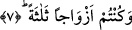

Bazı müfessirler de demişlerdir ki, bu âyette geçip “toz toprak anlamına gelen
“ğaberah”, “Keşke toprak olsaydım!” (Nebe 79/40) âyet-i kerîmesinde yer alan
“türâb: toprak”tır. Bu husus, ileride yeri geldiğinde incelenecektir.
Bu âyet-i kerîmede âriflerin gönlünde kopan kıyâmete de bir işâret vardır. Bu aşkın
kıyâmeti ve hamlesidir, tevhîdin cezbesi ve çarpıp sarsmasıdır. Âriflerin bu kıyâmeti,
çokluğun hükümlerini gerektiren beşerin maddî kuvvetini alçaltır; vahdet nurlarını
isteyen ilâhî ve rûhânî güçleri yükseltir. Bu kıyâmetin dondurucu kasırgası, beşerî
toprağa vurup insânî enâniyet dağlarından esip geçtiğinde hem beşerî toprağı hem de
enâniyet dağlarını darmadağın ederek kendi zat ve niteliklerinde isim ve izleri
kalmayacak şekilde yok edecektir. Bunlar, dağılıp toz duman hâline gelecek,
varlıklarından eser kalmayacaktır. Âdeta “…onların amelleri, ıssız çöldeki serap
gibidir ki, susayan onu su zanneder; nihayet ona vardığında orada herhangi bir şey
bulamamış, üstelik yanıbaşında da Allah’ı bulmuştur” (en-Nûr 24/39) âyetinin
mânâsı tecellî edecektir.
Buna tasavvuf ehlinin şu sözü ile işâret edilmiştir: Fakr makamını ikmâl edenin bu
kendi yararınadır. Hak yolda sülük etmek için hazik, ehil bir mürşidin irşâdına ve kâmil
ve mükemmil bir şeyhin yönetimine kaçınılmaz olarak ihtiyaç vardır ki, tevhîdin
hakikatının maddî ve cismânî güçlere üstün gelebilmesiyle rûhânî kuvvet ortaya
çıkabilsin, Nitekim, Rabbânî Ârif Ebû Said el-Harraz (k.s.)’a “Tevhîd nedir?” diye
sorulduğunda, “Hükümdarlar bir memlekete girdiler mi, orayı perişan ederler ve
halkının ulularını alçaltırlar” (en-Neml 27/34) âyet-i kerîmesini okuyarak cevap
vermiştir.
7. Ve sizler de üç sınıf olduğunuz zaman,
“Ve sizler de…” Burada “sizler” zamiri ile hitab şu anda yaşayan milletlere veya
tağlib yoluyla geçmiş milletleredir ya da yalnız şu anda yaşayan milletleredir. “Üç sınıf
olduğunuz zaman.” Bu üç sınıftan ikisi cennette, biri cehennemde olacaktır. Her sınıf
da bulunduğu yer itibariyle ve zikredilmesi bakımından bir diğer sınıfla birliktedir.
Böylece ister tek ister çift olsun her bir sınıf “ezvâc”ın müfredi olan “zevc” kelimesiyle
ifâde edilmiş olacaktır.
8. Sağdakiler, ne mutlu o sağdakilere!